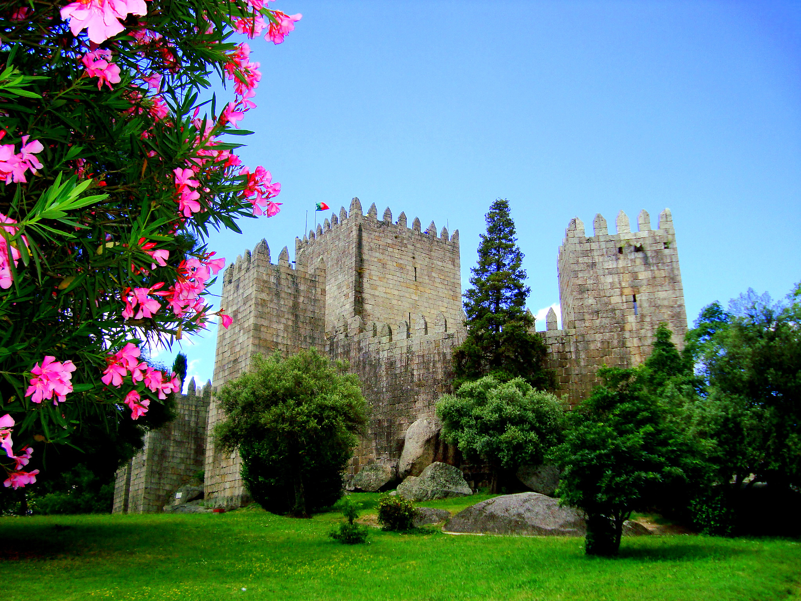
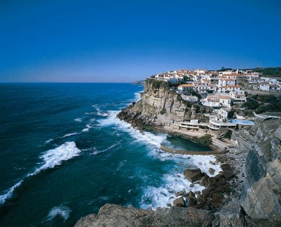
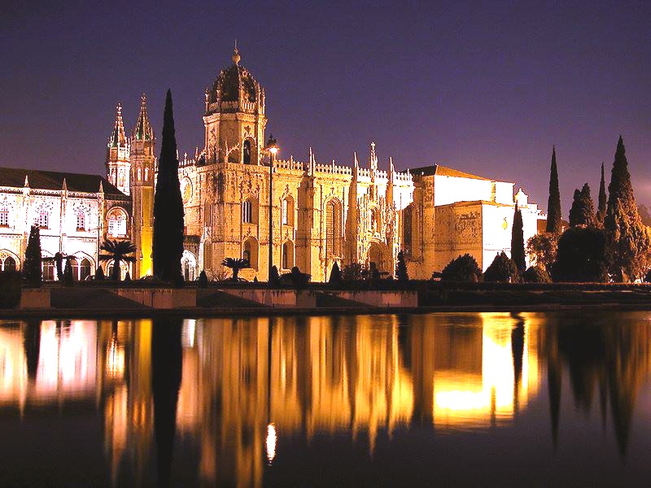

FADO, a music genre traced to the 1820s and characterized by mournful tunes and lyrics,
often about the sea or the life of the poor, and infused with a sentiment of resignation, fatefulness and melancholia
(comes from the word "saudade, or "longing", symbolizing a feeling of loss). This is the music of a historic Portuguese urban and
maritime proletariat, and is normally accompanied by the Portuguese guitar, a plucked string instrument with twelve
steel strings, strung in six courses comprising two strings each (one of the few musical instruments that still uses Preston tuners).

CASTLES, ancient military fortifications, a combination of experience learned from
ancient Romans (forts with high walls and strong towers) and medieval Moors (the stonework brought to Portugal in 711)
and Christian forces. Many castles from the 13th-14th centuries (with more decorative touches and features)
became fortified palaces to protect the monarch and courts. Nowadays most are ruins or shells of formerly magnificent constructions,
and only a very few have been restored. But they all remain a remarkable part of Portugal to explore.

SURFING AND BEACHES. Covering more than 850km, the Portuguese coast boasts
the variety of white sandy beaches (Algarve, Lisbon Riviera, Costa da Caparica, Southwestern Alentejo, Troia, Dunas de Leiria,
Peniche(costa de prata), etc.) for swimming/ bathing as well as for surfing (excellent conditions for surfers of every ability with a huge variety of waves:
the winter swell size of around the 6ft mark up to 15ft or more; the summer swell size of 3-5ft). BUT.. even if you are in the shallow
water on the beach, beware of dangerous "rip currents"!!!
WORLD HERITAGE. With more than 18 cases (historic centres,
archaeological sites, cultural landscapes, natural parks) granted by UNESCO, the country
attracts visitors to explore its royal palaces, historical city centres (Oporto, Evora, Guimarães, Tomar),
the Alto Douro wine region, the medieval monasteries of Alcobaca, Batalha, Hieronymites etc.
Don't forget magnificent Sintra, the town of four royal palaces, the Mourish castle, the mysterious Regaleira
Estate, the Capuchos Convent ... where you smell pine-trees and the ocean breeze.

MANUELINE STYLE(Portuguese late Gothic),
the early 16th century architectural ornamentation style,
incorporating maritime elements and discoveries brought
from the voyages of Vasco da Gama and Pedro Álvares Cabral. It synthesizes aspects of Late Gothic architecture,
Spanish Plateresque style, Mudéjar, Italian urban architecture, and Flemish elements.
Neo-manueline (middle 19th century) started with the construction of the Pena Palace in Sintra, continuing
with the restoration of the Jerónimos Monastery and the Belém Tower in Lisbon.